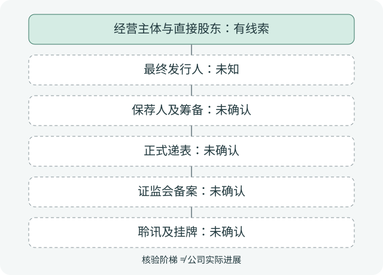

01｜先区分三个问题
截至2026年11月25日，公开资料支持上海商泰汽车的历史经营和软件产品活动，但尚不足以确认其港股IPO发行人、递表日期或拟上市资产范围。
经营主体真实存在，不等于该主体已经递表；品牌名称一致，不等于两个法人同属一家公司。
上市研究必须分别验证经营、控制权和发行程序。只有三条证据链相互闭合，才可以判断上市资产究竟是什么。
02｜股权穿透：先找到真正发行人
| 主体 | 当前证据 | 边界 |
|---|---|---|
| 上海商泰汽车信息系统有限公司 | 2015-08-04成立；注册资本及实缴资本均1000万元；2026年10月报道引工商数据为486名参保人员 | 单一法人而非集团口径 [S1] |
| 商泰科技（上海）有限公司 | 报道所引股东表显示持股100% | 尚未调取原始工商档案 [S1] |
| 商泰软件（上海）有限公司 | 历史汽车业务来源；公司介绍称2015年转移核心业务 | 不能据此认定当前控制关系 [S2] |
| 最终实益拥有人／境外发行人 | 未知 | 需要上层股东及上市文件 |
可能存在红筹控股架构、境内股份制改造或其他安排，但都只是待检验假设。工商股东关系也不等于会计合并范围；必须查明控制、知识产权、合同与人员究竟归属何处。
03｜上市证据阶梯：没有公开招股书意味着什么？

港交所2026年7月24日咨询总结将保密递表选项扩展至所有新申请人。因此，公开申请版本缺失不能证明没有递表。[S7] 对适用中国证监会境外上市备案制度的企业，首次境外提交申请后原则上三个工作日内应办理备案。[S8][S9]
本轮未取得可匹配商泰集团的正式上市申请或备案通知书；最新完整备案表及未知发行人名称没有完成穷尽核对。结论限于尚未得到公开文件确认，不推断是否正在筹备或保密递表。
04｜同名陷阱：上海 iAUTO 与美国 iAuto Group
正道集团（01188.HK）在2023年9月29日公告中明确将合作方 iAuto Group Inc. 描述为美国特拉华州注册的清洁能源汽车企业，拟议交易须订立正式协议才可落实。[S5] 2024年媒体报道将该主体与仰融及高合汽车合作联系起来。[S6]
上海商泰汽车经营方向为车载软件和软件定义汽车。两者注册主体、业务描述不同；未取得同一控制体系的证据。不得把正道集团的股票代码、美国主体的资本运作或高合融资传闻归属于上海商泰。
05｜产业证据：产品存在不等于利润
| 时间 | 材料 | 能证明什么 |
|---|---|---|
| 2013 | Linux基金会成员公告 [S3] | 历史主体的车载信息娱乐技术活动 |
| 2015 | 高校就业网公司介绍 [S2] | 企业自述业务承继 |
| 2022 | 软件协会SOME/IP产品评估名单 [S13] | 公开产品评估记录 |
| 2026 | 软件协会SDV Studio评估名单 [S4] | 工具链产品记录 |
| 2026 | 工时许可报道及官网 [S1][S12] | 经营活动与业务方向线索 |
协会名单不证明量产规模，招聘材料不证明审计收入，参保人数不等于集团员工规模。原调查中的埃泰克预付款、具体装机数和车型报道在本次发布复核中未取得充分定位，暂不作为确定事实发布。
06｜同行对标：博泰车联能说明什么
博泰车联（02889.HK）2025年年度报告显示，其2025年营业收入约35.1亿元，同比增长约37%；智能座舱域控制器交付130万台。媒体转述年报毛利率为12.4%。[S10][S11] 这些是同行的经营指标，不是商泰的数据，也不能据此推断其适用哪条上市规则。
业务可比对象还包括中科创达、光庭信息、德赛西威、诚迈科技与东软集团。软件授权、定制工程、硬件集成的毛利结构、资本投入和增长弹性不同，需先区分收入结构再选择可比公司；这些同行不是已证实的股权关联方。
候选上市动机包括研发投入、国际化、股权流动性与并购融资；无公开材料证实这些是商泰管理层的实际决策。
07｜估值实验：输入不是公司财报
未取得商泰审计财务报表，因此不提供真实目标估值。以下模型仅解释市销率的敏感性，假设下一年收入 = 当前收入 × (1 + 增速)，假设市值 = 下一年收入 × 市销率。
假设下一年收入： 亿元；假设市值： 亿元。
默认数值纯属演示，不是公司预测；实际估值还需现金流、债务、股份支付及客户集中度。
08｜尽调优先级与反证条件
| 核验问题 | 证据 | 如何修订判断 |
|---|---|---|
| 最终股东与发行人 | 境内工商历史、境外注册、持股链 | 确认控制边界 |
| 是否正式递表 | 港交所申请资料、正式公司或保荐人披露 | 区分筹备与递交 |
| 境外上市备案 | 证监会通知书及境内运营实体 | 验证监管阶段 |
| 盈利及现金流 | 审计报表、客户和收入拆分 | 重新选择估值模型 |
| 知识产权与员工持股 | 授权合同、持股平台与发行人股本 | 判断权益是否纳入上市范围 |
竞争解释包括：公司未筹备上市、正在筹备但未提交、已保密提交、以另一法人申报。现有资料无法在四种解释之间做可靠区分。下一步优先查商泰科技（上海）有限公司的股东变更及境外控制链，再按发行人名称检索监管披露。
监控入口：港交所披露易、中国证监会、国家企业信用信息公示系统、香港公司注册处。
09｜来源与定位
- S1 新浪财经：商泰汽车工时许可及工商资料（2026-10-18）；股东信息表；工商数据来自天眼查，非原始登记档案。
- S2 吉林大学就业网：上海商泰汽车公司介绍（未标明发布日期）；公司介绍；2015年业务转移，企业自述。
- S3 Linux Foundation：Suntec Software 加入基金会（2013-05-28）；公告中的 Suntec Software 段落。
- S4 上海市软件行业协会：2026年3月第四批软件产品评估名单（2026-03）；沪RC-2026-0434，SDV Studio V1.0。
- S5 正道集团：独家经营权谅解备忘录（2023-09-29）；第1页，特拉华州注册主体及交易不确定性。
- S6 每日经济新闻：高合融资报道与 iAuto Group 实益拥有人（2024-05-21）；引述正道公告；不是独立股权档案，也不证明融资到账。
- S7 港交所：上市制度竞争力改革咨询总结（2026-07-24）；Confidential filing and enhanced Return Mechanism。
- S8 证监会：境内企业境外发行证券和上市管理试行办法（2023-02-17）；第43号公告；2023-03-31起施行。
- S9 山西证监局：关于境外上市备案的说明（未标明发布日期）；援引试行办法第十六条，首次境外提交后三个工作日内备案。
- S10 博泰车联2025年年度报告（2026-04-28）；主席报告，2025年度营业收入及交付量。
- S11 证券时报：博泰车联2025年报（2026-04-29）；年度财报转述，非独立财务数据。
- S12 商泰汽车官网（未标明发布日期）；公司产品与战略自述。
- S13 上海市软件行业协会：2022年4月第二周软件产品评估名单（2022-04）；沪RC-2022-0861，SOME/IP软件。
资料检索日：2026年11月25日。未取得完整工商档案与完整最新备案表，不能以搜索无结果替代正式监管核实。